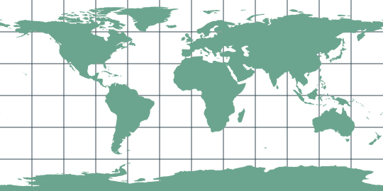

Sentinel Swarm
A daily snapshot from CISA’s Known Exploited Vulnerabilities catalog, with FIRST EPSS scores when available.
World basemap

Basemap unavailable
On a computer, drag when zoomed or double-click to zoom. On touchscreens, use the pan buttons so you can still scroll the page. With the map focused, use arrow keys to pan, +/− to zoom, or Home to reset.
Refresh scheduled daily at 14:23 UTC. This public page has no live feed, telemetry, or agent detection.
Snapshot pending
Known exploited vulnerabilities
EPSS estimates the probability of exploitation in the wild in the next 30 days. Assess severity and risk to your organization separately. EPSS by FIRST
If the snapshot doesn’t load, reload this page or browse the original CISA catalog.